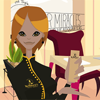

I received my BFA in animation from the Savannah College of Art & Design where I learned 2D and 3D with a specialization in character and effects animation. I also studied professional writing and sequential art.

Consulting
Freelance Multimedia & Communications
I became an independent contractor while at SCAD and have freelanced ever since. I've done art, animation and design work as well as writing, translation and editing.
Expatriation
Life in Georgia & Japan
I went to the Republic of Georgia as a volunteer teacher and freelanced for another year after my contract ended. I then went on to Japan for an internship with the Labo International Exchange Foundation.
Repatriation
Return to the Sunshine State
Back in Florida, I continued freelancing and started studying programming and scripting languages independently. In my free time I worked on my own projects, volunteered & joined the Jacksonville Coalition for Equality.
General Assembly
User Experience Design Immersive
When I learned about the Opportunity Fund, I created an animation for my application video and was very fortunate to receive a scholarship for the UX program, which brought me to GA in DC.
Next Steps
Aiming for the Skies
With my new skills I plan to further my creative career, pursue independent projects, give back by volunteering with underprivileged youth who want to learn about the tech field and continue down a path of lifelong learning.
Netflix, Inc. is a provider of on-demand Internet streaming media.
Netflix is looking to significantly increase social activity & sharing on their site between users. They want to start with an MVP-- the smallest feature set that is valuable to users. They want to understand how people find and share movies. They want to address the key screens using the current visual design of Netflix.com and NOT shock the existing audience with change.
Duration: 2 Weeks
|
Team: Cam Waller, Douglas McCandless
Tools
Pencil & Paper
Typeform
Omnigraffle
Axure
before
after
Problem:
Netflix wants to increase social sharing
Users want a consistent, customized experience, not social features
Search function doesn't always work well
Suggested content doesn't always match user tastes well
Solution:
Provides social and other extra features via second screen
Allows users to add people to their taste profiles
Expands My List into multiple playlist feature
Doesn't force social features on users who don't want them
Research
This competitive analysis looked at the elements of major competitors with comparable business models
Lack of co-watching across the board indicated this feature as a potential opportunity
Improved playlists and real-time commenting could help make Netflix more competitive in the landscape
Intuitive, highly-effective search feature across devices is a must
Overall, Hulu currently has the most robust set of integrated social features
One user binge-watches on Netflix daily and would welcome innovative new features such as co-watching and even mood-based recommendations, but finds the search limitations extremely frustrating and isn't satisfied with the current categories or recommendations algorithm
Another daily user couldn't care less about features, just wants to be able to find more of her favorite genre, actors and directors, and she would really like to see categories improved
One occasional user already has an established routine outside of Netflix for getting recommendations on and discussing movies, and he gets too involved with what he's watching to be bothered with special features on a second screen
Another casual user says while he would love to see what his friends are watching, he doesn't want to revel everything he's been watching
User Interview
Personas & User Flows
Research
The results of the user research helped shape personas and user flows to guide ideation
Sauda is an avid Netflix user who just wants a straightforward way to find and watch her favorites
Jun isn't on Netflix all the time, but when he is he wants comprehensive control over his experience
The "playlist" user flow illustrates the simplicity of creating a new playlist and adding to it
The "add a person" flow explores searching for and adding an actor or director to one's taste profile
The "second screen" flow begins with watching a video and enabling the feature, and continues through the usage of the features on a mobile device
Ideation
We started prioritizing features for the MVP by arranging potential features based on research & the resulting personas & user flows
There ended up being a disconnect between Netflix's business needs & user needs
Regarding proposed features, users responded best to playlists and recommendations based on favorite actors & directors
Response to social features was neutral at best, and the most requested features fell outside of the business goals for the product
Moving forward, we addressed the needs of both parties by prioritizing recommendations based on favorite actors & directors, playlists & second screen features, including unobtrusive social features
Since the features needed to to be integrated without disrupting the Netflix layout much, wireframes were built on top of the existing interfaces
The main web wireframe shows space for multiple playlists and additions to the main navigation menu
The main mobile wireframe shows tabs for information, chat and fact features
The prototype includes multiple screens as needed on both devices for the user flows
Wireframes
Usability Testing
Key Findings
Users were able to intuitively use the new Netflix and did not find the changes jarring
Those who tested the prototype didn't care about the social features, supporting the finding that this is not a priority for most users
Users continued to express interest in more personal control over their usage of Netflix and more quality content relevant to their interests
Results & Next Steps
This project ended up revolving around how to address both business needs and user needs when the two didn't match. The final product succeeded as a set of simple, valuable features that appealed to users. It also incorporated the social features Netflix wanted without forcing them upon uninterested users. Moving forward, our recommendations include:
Improving search functions & the consistency of content & ratings across devices
Offering more control and customization for savvy users
Improving the recommendation algorithm & categories
Continuing to expand the content library
Exploring ways to further personalize the Netflix experience
1. Logo - The redesigned logo retains the same overall look, but the sun is rounded, it's background color removed & text spacing is improved.
2. Navigation - The look of the navigation bar has been modernized and takes up less space. Some menu items were moved to improve IA.
3. Search bar - Social media icons and the email field were moved from the header and replaced with a search bar, which is an expected header element.
4. Donate - This is a major call to action, so it has been separated from the main navigation and placed on its own in the main header area, which has been given a plain background to ensure the button stands out.
5. Hero - Campaign imagery is very powerful, so a large hero image with an overlay caption has been added for visual impact.
Header
Cause Icons
Key Changes
Organizational Capacity & Strategic Networks removed, as they are not campaigns or issues
Flat icons have replaced the clipart originals, which have an unsophisticated look
The icons are housed in an interactive, animated "accordion menu" that displays a brief summary of each cause, improving the browsing experience
The icons are housed in an interactive, animated banner that displays a brief summary of each cause, improving the browsing experience
The accordion menu was implemented using a jQuery plugin called lite accordion, which was customized slightly
Key Changes
The full description of each cause took up a lot of vertical space in the original position below the horizontal icons
This description has been relocated to the right column, providing more space for individual campaigns and creating more of a sense of movement down the page
The social media icons and email input field originally located in the header were moved to the empty space immediately below the new description
This two column layout was implmented using columns within the CSS grid system
Cause Description
Post Summaries
Key Changes
In the initial iteration, the text intros for each post were preserved in the redesign
After receiving feedback, the intros were further summarized to make the page less text-heavy & helping the visuals to pop more
The name of each issue was moved from above the image to the side, above the issue, to take up less vertical space
The collective changes make the page easier to browse
Key Changes
The footer was kept the same, only with minor stylistic changes to ensure consistency with the rest of the redesign
The ticker was replicated using a jQuery plugin called Vticker
The layout of the footer elements was achieved using columns within the CSS grid system
Footer
Results & Next Steps
Moving forward, additional ideas include:
Continuing to iterate on the design and interactivity of the cause icons
Exploring other ways of building a custom accordion style menu or something similar
Redesigning other sections of the site
Performing a site analysis to identify key aspects of the user experience to improve upon
Getting user feedback on the current iteration to inform additional changes
Salter Mitchell is one of the nation's strongest behavior change marketing firms, and the International Rhino Foundation is a world leader in rhino conservation.
Salter Mitchell came to us seeking UX assistance on the website redesign for their client, the International Rhino Foundation. Rhinos.org needs simplified, modernized content, better organization and targeting of audiences based on need-states. They want to get people more engaged, reach a wider audience and increase conversions.
Duration: 2.5 Weeks
|
Team: Cam Waller, Pauline Parikh
Tools
Pencil & Paper
Omnigraffle
Axure
Google Forms
Illustrator
before
Problem:
High bounce rate
Too much content
Disorganized information
Few visuals
Obscured mission & values
Frustrating donation & adoption processes
Solution:
Interactivity to improve engagement
Content consolidation
Streamlined navigation
Visual, multimedia-rich design
Prioritization of key content
Motivation for audience to support & get involved
Simplified donation & adoption process
after
Original Rhinos.org Sitemap
Information Architecture
Nine navigation items
Lots of pages in most sections of the site
Major calls to action aren't highlighted
Blog and curated news lead away from the site
About IRF focuses more on the organization than the cause
Information Architecture
Most useful sections don't include major revenue-generation pages
Rhinos in the news is the most useful, but leads away from rhinos.org
Only 20-25% of people find fund-generating pages useful
Survey Results - Usefulness
Proposed Rhinos.org Sitemap
Information Architecture
Reduces number of navigation items
Consolidates scattered information
Prioritizes key content & relocates it accordingly
Combines and incorporates rhinos in the news & blog
Utilizes footer for additional content & repeated calls-to-action
User Research
Survey distributed to IRF newsletter subscribers received 320+ responses
IRF's primary audiences are active or retired professionals
Most have a person interest in rhino conservation, followed by professional & research interest
Research validated two of the primary personas Salter Mitchell provided
One previously unconsidered audience was discovered
Survey Results - Audience Demographics
Personas & User Flows
User Research
Salter Mitchell provided several personas representing their audiences
Andrea, validated by the research, represents professionals who give regularly
Andrea finds rhinos.org through social media and is motivated to donate and look at fundraising ideas after learning about rhinos & IRF's work
Erica, validated by the research, represents corporate officers seeking partnership opportunities
Erica visits rhinos.org specifically for information on corporate funding & to see how existing partners are featured
Frank, discovered through the research, represents retirees with personal experiences & interest in rhinos
Frank finds a rhinos.org blog post via search, adopts a rhino & subscribes to the IRF newsletter
The initial wireframes and clickable prototype address the following key screens:
Home - Should present the mission and values of IRF, critical information and the importance of the cause
Rhinos - Acts as a place to access all information about the rhino species
Species - Visually stimulating, informative and interactive to educate, improve retention and motivate action
Donate - Consolidates donation details, streamlines the donation process and offers impact details to boost donations
IRF Programs - Legitimizes IRF's work by pinpointing the locations of field programs, introduces zoo partners and incorporates interactivity
Fun Activities - Adds appeal for young audiences without alienating others and presents more interactive and fun elements into rhinos.org
Adoptable Rhinos - Serves as a place to access the profiles of all rhinos available for adoption
Adopt - Uses multimedia to facilitate a more personal connection with the rhinos and encourage support through adoption
25 Facts About Rhinos - The most popular page on the site should motivate people to stay on the site
Wireframes
Usability Testing
User Feedback
Usability testing showed that users were able to move through the user flows, but achieved this through different means than expected at some points. We learned that:
People expect quick references or calls to action with icons, so the text beneath the icons on the homepage was adjusted accordingly
People used the rhino icon instead of the main navigation to get to the rhino page, so it was retained as its own navigation item
Footer donation and adoption buttons were used multiple times, reinforcing the decision to repeat them there
Visuals served as the strongest cues, supporting the integration of more visuals throughout rhinos.org
Visual Design
Initial colors & textures chosen from past brand guideline package
Home - Implements icons as visual cues, establishes mission & values & presents most useful or critical content
Species - Visuals engage & guide the user through the page & enrich interactive panel
Donate - Icons represent donor levels, cool-colored, rounded form elements are more welcoming & content that could potentially lead away from the donation page are minimized
IRF Programs - The interactive map visually places IRF's work while the zoo partner section introduces their partner program & the size of IRF's network
Fun Activities - Makes use of design suggestions from the original brand package & attracts the attention of young audiences with colors & images
Adoptable Rhinos - Video engages the user while selected photos show the personalities of the rhinos & bold calls-to-action lead to the individual profiles
Adopt - Multimedia-rich bio tells the rhino's story to create an emotional connection & the simple form encourages conversions
25 Facts About Rhinos - The most popular page on the site has been revamped into a masonry format, increasing visual appeal & giving users more control over which facts they focus on
Results & Next Steps
Moving forward, additional suggestions for Salter Mitchell & IRF include:
Ensuring a responsive layout that's functional & interactive across all devices
Continuing to iterate upon the proposed interactivity & exploring additional options
Implementing a comprehensive content management & maintenance schedule
Incorporating a community hub, which was mentioned with interest in the user survey responses


{kind=link}
{kind=link}
{kind=link}
{kind=link}
{kind=link}
{kind=link}
{kind=link}
{kind=link}
{kind=link}
{kind=link}
{kind=link}
{kind=link}
{kind=link}
{kind=link}
{kind=link}
{kind=link}
{kind=link}
{kind=link}
{kind=link}
{kind=link}
{kind=link}
{kind=link}
{kind=link}
{kind=link}
{kind=link}
{kind=link}
{kind=link}
{kind=link}
{kind=link}
{kind=link}
{kind=link}
{kind=link}
{kind=link}
{kind=link}
{kind=link}
{kind=link}
{kind=link}
{kind=link}
{kind=link}
{kind=link}
{kind=link}
{kind=link}
{kind=link}
{kind=link}
{kind=link}
{kind=link}
{kind=link}
{kind=link}
{kind=link}
{kind=link}
{kind=link}
{kind=link}
{kind=link}
{kind=link}